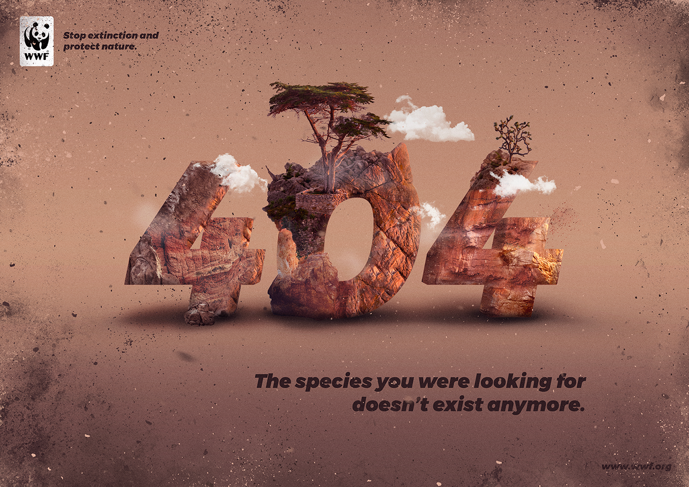

Inglês
Veja como foi desenvolvido o estudo de outra lingua durante o curso.
Realizar esse trabalho foi uma experiência muito interessante e educativa. Selecionar uma campanha publicitária ambiental em vídeo e um cartaz exigiu atenção aos detalhes e reflexão sobre como essas mídias sensibilizam o público de formas diferentes. Traduzir o conteúdo para o inglês foi desafiador, mas ajudou a aprofundar a compreensão das mensagens. Durante o processo, foi enriquecedor analisar as estratégias usadas para atrair espectadores e comparar os impactos do formato visual e impresso. Além disso, contribuir para a exposição com legendas acessíveis trouxe uma sensação de colaboração e propósito coletivo.
